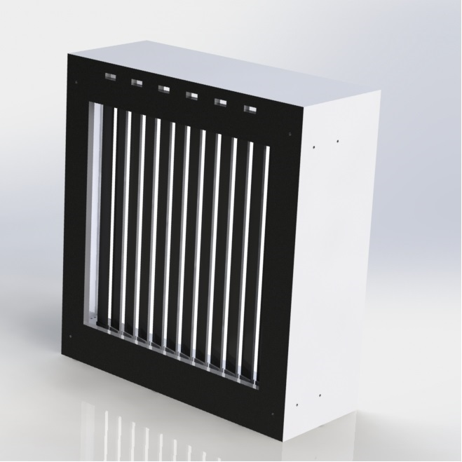
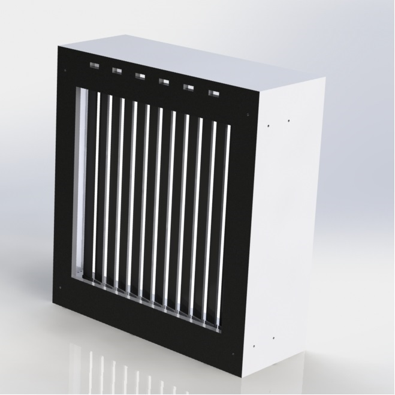
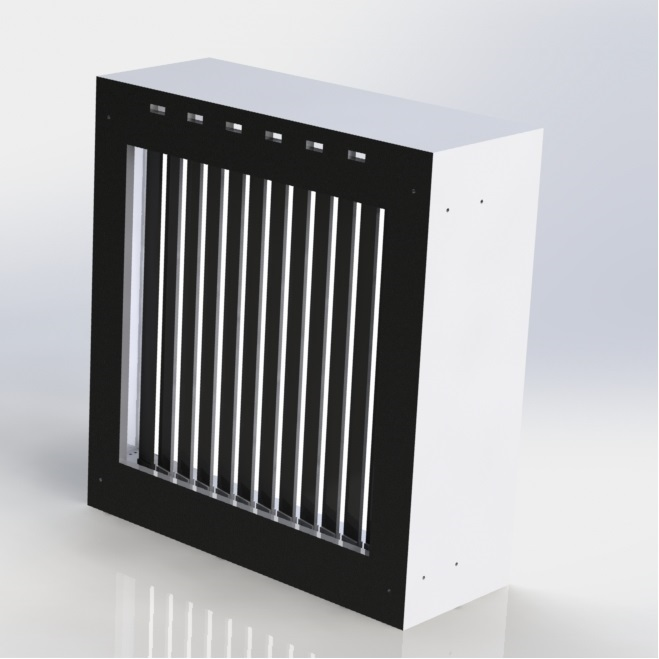
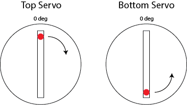
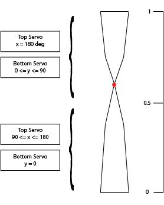
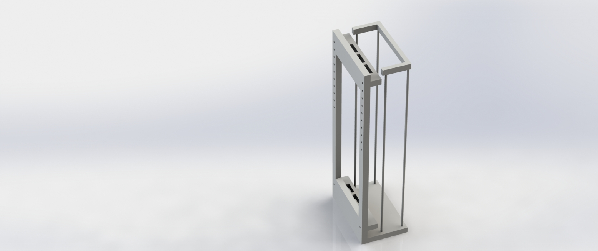
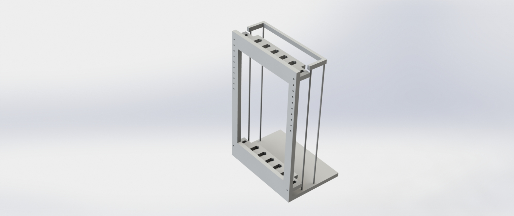

Latest Posts
Let's Gear Up
Jason Lan
20 November 2015 9:39 PM
 



During Sprint III we added sensor input to the system to make our art installation interactive. We started with infrared distance sensor to measure the presence/ distance of a person. Whenever a sensor detects an object in its range, the corresponding paddles behind it will rotate to a different position. A small-scale model was made to demonstrate the interaction process.
A big decision we made during this sprint is to shift the object rotating in the middle from ribbons to paddles. The main reason is the difficulty involved in controlling the spinning of ribbons for desired patterns. As ribbons are not consistently providing the same pattern during each rotation and we couldn’t find a desirable ribbon material for the project. Since we all want to focus on the design of interaction instead of the system complexity, we changed from twisting ribbons to twisting paddles.

On Wednesday we started to assemble the third Prototype with 12 paddles on. In this iteration of the project we increased it to full scale with most parts we are going to use in the final iteration. The Arduino Mega 2560 replaced the Uno to provide control channels for more servos. A wall plug-in power was added to replace the old bulky lab DC power source, six ultrasonic range detectors were connected to get sensor input and a LED strip was installed to provide background lightening. Below is a picture for our prototype.
We are soooooo excited that the prototype is working, but we also realized improvements can be made in the next sprint
- Make the product aesthetically pleasing
- More interaction modes
- Clean up the wires (imagine 64 wires tangling together…)
- Paint the box
- Move the circuits onto proto-board
- Find a place to put up our project (library, hallway and etc?)
It’s so surprising that there’s going to be only two weeks and a half left for this project and we’d love to finish it strong and, of course, enjoy ourselves along the way. Go team!
Goodbye Sprint 2, Hello Sprint 3!
Meg McCauley
13 November 2015 3:03 PM
We just finished the first week of Sprint 3. This is a very exciting time for our team where there are lots of things for us to do. We had our first real sprint review to end Sprint 2 last Friday. Seeing the progress of other teams and receiving feedback from our professors and our peers left us with a lot to think about as we started Sprint 3.
The first thing we did during Sprint 3 was sit down as a full team and talk in detail about the direction that we want our project to head in. The first major change that we made involved switching our main display from a ribbon that twists to a paddle that rotates. This choice was made for a variety of reasons, but primarily to reduce the number of servos that we would have to power and to simplify the computing system.
After making our plans to look forward, we spent some time look back and reflecting on Sprint 2 by doing a sprint retrospective. During a retrospective, each team member individually writes down pluses and deltas from the sprint on sticky notes. Pluses are positive things that we want to continue doing; deltas are things that could use improvement next sprint. After we have all written our thoughts down, we take turns putting our sticky notes on the wall and giving a short explanation for each plus and delta. As more team members add their sticky notes to the wall, we try to group them by similar idea or theme.
At the end of this process, we look over the wall as a whole and chose a kaizen, or focus, for the upcoming sprint. This sprint, we are going to be focusing on communicating problems. This means that whenever one subteam runs into a problem, they will make sure to inform the full team so that we can all brainstorm solutions together. This kaizen also includes communicating with our professors and peers to get a different perspective and possible outside suggestions to resolve our problem.
After talking about our pluses and deltas, we made a list of goals that we as a team wanted to accomplish this sprint:
- Sensor integration
- New prototype at full scale
- Fully contained system
- Reliable servos
- Arduino powered on power supply
- Decide how to power all servos
- Seeduino Mega?
- Arduino shield?
- At least 1-2 more beautiful web pages
- Individual work and subteam meetings
To fulfill one of our sprint goals, we decided to meet as subteams to get more work done when our full team wasn’t available. At the first ECE subteam meeting, Jason, Charlie, and I worked together to get an integrated prototype of an IR sensor responding to user input and controlling a servo. This interaction between sensor and servo is key to our final design, so it was extremely exciting to be able to have this interaction prototyped and working. We recorded this important milestone in film.
Although we have encountered some roadblocks on our journey so far, we are working hard to overcome them. I am optimistic about where we are headed and can’t wait to see where we end up at the end of this sprint!
Best, Meg
Servo Control
Bonnie Ishiguro
6 November 2015 11:15 AM
During Sprint 2, the software team worked on the task of changing the orientation of a ribbon by sweeping its servos to the appropriate positions. Although the sweeping motion itself is simple to implement, we ran into challenges while integrating our code with the mechanical system. We wrote our original sweeping algorithm under the assumption that the servos were all oriented the same way. In our first prototype, however, the servos on top were flipped 180 degrees around the y axis compared to the bottom servos, in addition to being upside down. This meant that the ranges of motion for a top servo and a bottom servo were offset by 180 degrees, and they could not rotate in the same direction.
To resolve this issue, we first flipped the bar that the bottom servos are mounted to align their ranges of motion. To account for the fact that the top and bottom servos are facing each other, we altered our calibration and sweeping functions. We now calibrate the bottom servos to the 0 degree position and rotate them clockwise while sweeping to a new position, and we calibrate the top servos to the 180 degree position and rotate them counterclockwise while sweeping.
After successfully completing servo sweeping, we started implementing the algorithm we worked out in Sprint 1 that translates a desired ribbon shape to top and bottom servo positions. This is illustrated in the following figure. The red dot indicates the position of the skinny part of the ribbon after it’s folded by its top and bottom servos, and the boxes on the left indicate the servo positions required to achieve a desired ribbon shape.
In parallel to servo control, we set up Python to Arduino communication over a serial port using a library called pyserial. We tested it by changing individual servo positions using Python. A next step for Spring 3 is to integrate this with our Arduino servo control code, so that we can write our sensor processing and ribbon pattern code in Python.
A challenge that we faced throughout the sprint was working with power sources for the servos. We originally powered the servos with the 5V pin on the Arduino. Our current prototype has six servos for three ribbons, but with this setup we could not control more than three or four servos without seeing unpredictable behavior. This made debugging code difficult, as it was hard to tell whether a servo was not moving as expected because of a problem with our algorithm or a power-related issue. Halfway through the sprint, we switched to an external power supply, which allowed us to work with all six servos at once. Although more reliable, we still experience servo jitter, which seems to be caused by the current voltage level set by the power supply.
Advancing the Mechanical System
Charlie Mouton
30 October 2015 12:28 PM
During Sprint 1, we were able to create a mechanical system that would serve as our testing platform for our first few sprints. We quickly cut some plywood on the shopbot CNC router we have access to. Of course, as with any first prototype, we ran into some issues at assembly, specifically if the areas of servo mounting and wire management.
I did not account for the mounting tabs on each servo, and the servo mounted in the middle did not fit, and eventually was mounted with its tabs sitting above the other two. Also, once we mounted our two inch wide ribbons, we noticed that due to the servos close proximity to the front plate, the ribbons were not free to rotate 180 degrees without interference. We solved this problem temporarily using delrin spacers.
I put little thought in wire management, causing the wires running from our arduino to the top servos to look unsightly, and leading to several instances of them getting unplugged from our breadboard due to their mounting system. There is also no home for the arduino and breadboard, and they are just resting at the bottom, causing some interference with the servos mounted at the bottom of our system.
To solve these problems for Proto2, I implemented some holes in our arduino mounting plates for wires to go through. I also left more space on each side of our front plate for the wire to traverse down to the electronics sitting on the base. I also improved the servo mounting plate by rotating the angle that the servo is mounted by ninety degrees, eradicating any interference that might occur between their mounting tabs. This also allowed for us to create better spacing between servo horn and the front plate.
Another major change for Proto2 is the addition of two more ribbons. By having potentially 5 ribbons mounted, we can better visualize the patterns that we aim to see in the larger system, even if we won't be able to do that this sprint. By planning ahead in this sense, we ensure that our computing team has a well-suited testing platform for them to continue to work on their interactions with their servos as well as their pattern algorithms.
Copyright © Megan McCauley 2015